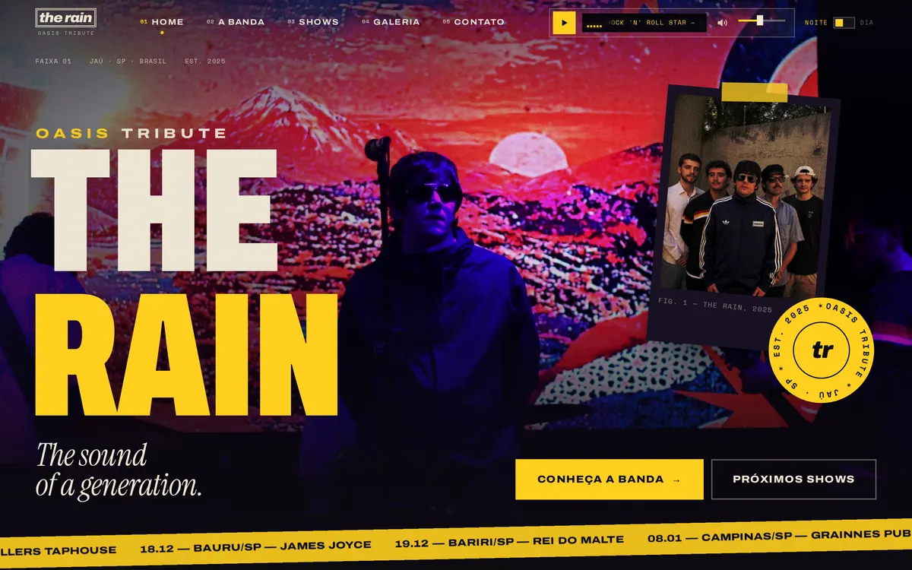
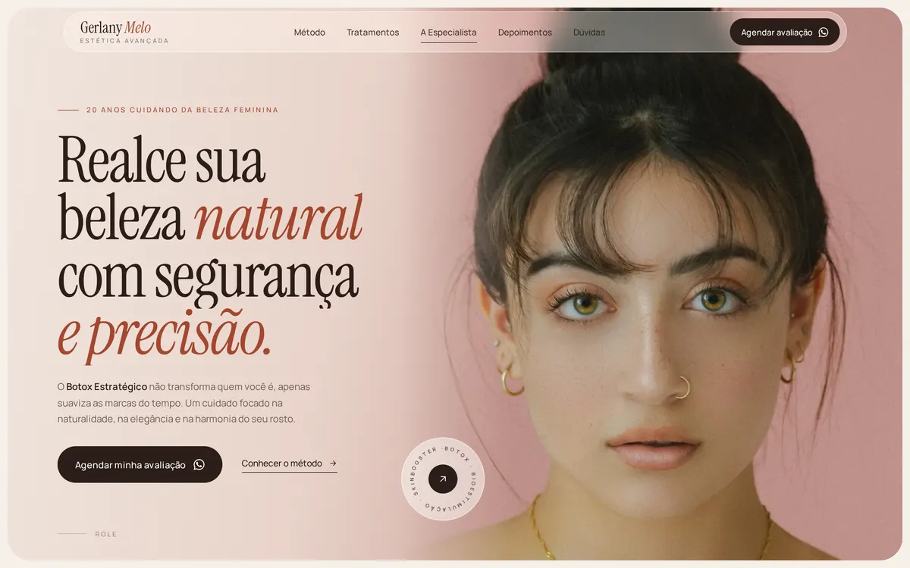
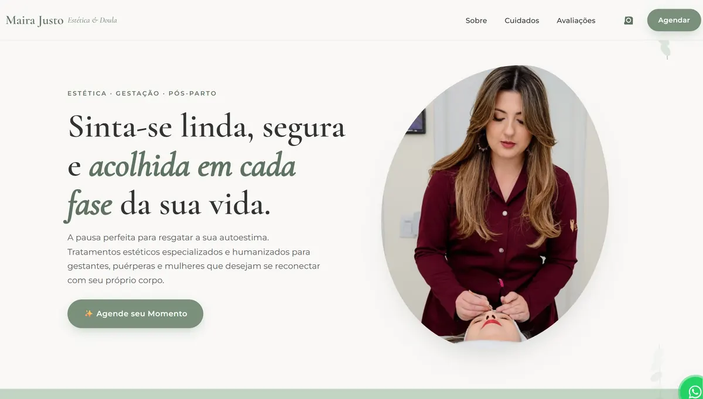
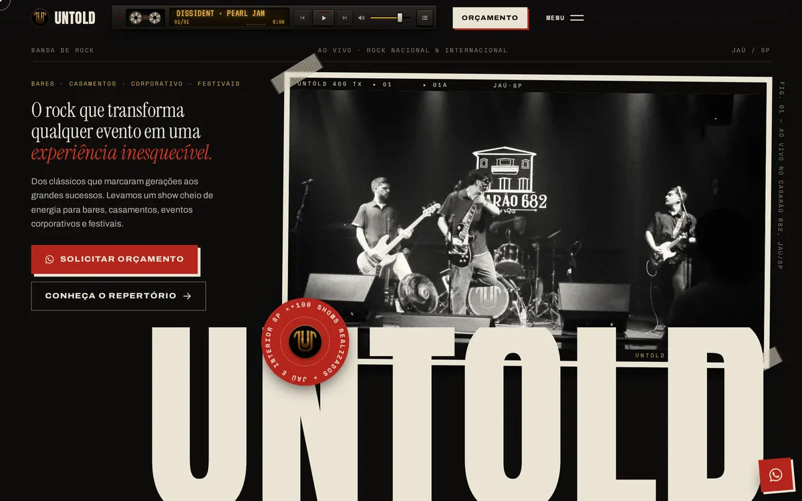
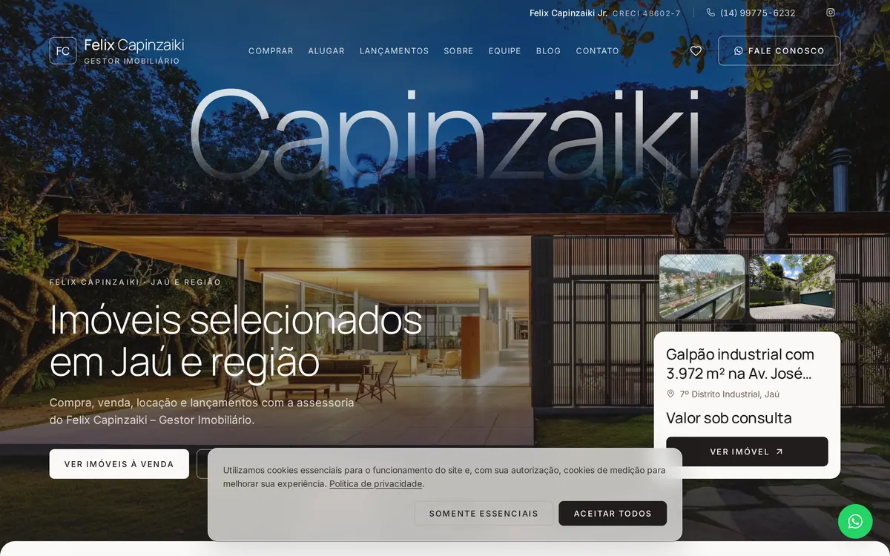

Todos os Projetos
Explore a galeria completa dos sites estratégicos que desenvolvi. Cada detalhe foi pensado para atrair, engajar e converter.

Site da banda tributo ao Oasis de Jaú (SP), que leva a experiência de um show da era de ouro dos irmãos Gallagher para bares, festivais e eventos, com agenda, vídeos e contratação.

Site sofisticado para a biomédica especialista em Estética Avançada e Botox Estratégico em Fortaleza, com método, tratamentos, depoimentos e agendamento de avaliações pelo WhatsApp.

Plataforma desenvolvida para transmitir acolhimento e profissionalismo, facilitando o agendamento de consultas e destacando serviços especializados.
Design focado em transmitir seriedade e transparência. Plataforma desenvolvida para destacar a atuação jurídica e captar clientes em meio digital.

Presença digital imersiva que reflete a identidade musical da banda, reunindo galeria, agenda de shows e material para contratantes.

Site do gestor imobiliário Felix Capinzaiki, com imóveis à venda, locação e lançamentos em Jaú e região, e contato direto pelo WhatsApp.
Gostou do que viu?
O próximo site desta lista pode ser o seu. Vamos construir juntos a ferramenta que vai escalar o seu negócio.